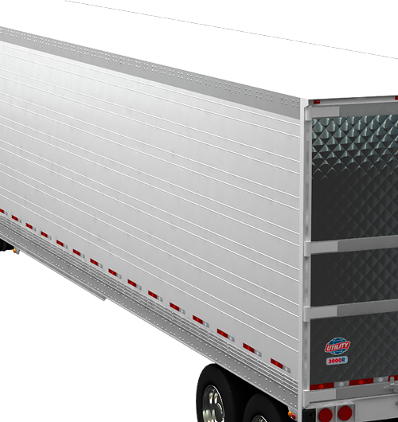

|  |
Características
-
Borda inferior de aluminio extruido para uso rudo
-
Paneles y postes convencionales constituyen la pared lateral
-
Remaches ancla para los postes de las paredes
Ventajas
-
Distribuye cargas verticales de la pared.
-
Bajos costos de reparación con el uso de partes estándar contra paredes de diseño compuesto.
-
Conexión fuerte y duradera de cada pared lateral.
|